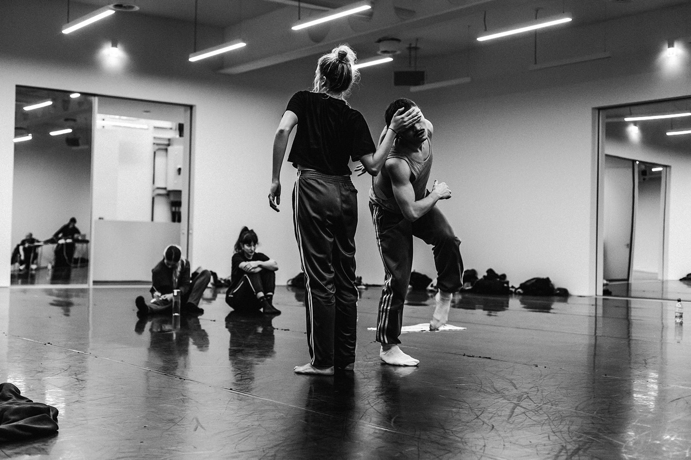
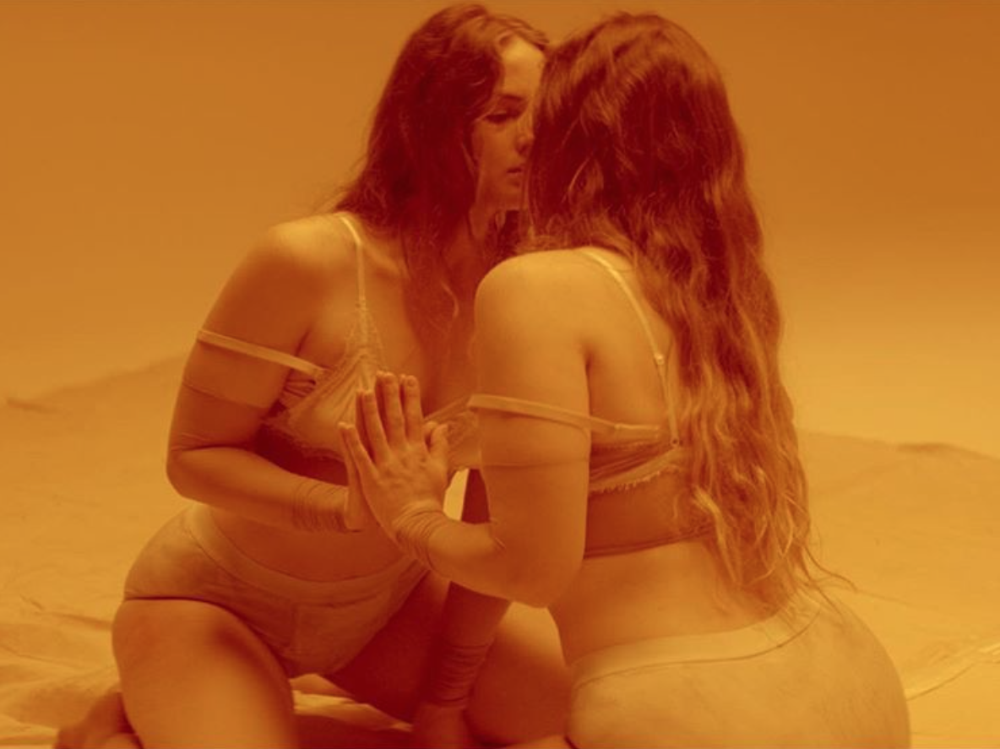

London-based choreographer and artist Holly Blakey’s work spans across many disciplines, including stage, screen, and collaborations with visual artists. Recent choreographic credits include fashion films for Gucci, Dior, and Paul Smith, and music videos for Coldplay, Young Fathers, and Florence and the Machine. Live collaborations include “Deja Vu” with visual artist Hannah Perry, musician Mica Levi, and Lucy Railton. Recently, she made “Cherry Hill,” a collaboration with Christies and Nowness starring model and actress Camille Rowe. Blakey continues to work with her company in her most recent live show “Some Greater Class,” with live music by Gwilym Gold and Darkstar. Here she opens up about her process, what makes for a healthy collaboration, and the importance of truly believing in yourself and your work.
Do you think a person needs formal training in order to be a choreographer or dancer, or do you think it’s something that someone just knows how to do?
I think that you have a mixture of things that creates different outcomes. For example, some of the most incredible technicians and most amazing dancers ever, you might see them dance at a party, and they actually just can’t dance, and you’re like, “Oh.” It kind of depends what you look for in a dancer.
I think equally, it’s a sense of having something to prove. My trajectory into making dance was unconventional. I didn’t go to a conservatoire. I went to university. I studied dance, of course, and I’ve studied dance actually all my life since I was three, but I really fucked everything up. I guess I lost my mind for a bit and spent some time in a psychiatric hospital. I was diagnosed with anorexia and depression… and it took a while to find my feet after that. I couldn’t dance for a period of time. It was one of the most difficult things I had to face, when I didn’t get into the schools that I wanted to go to. It became the most driving thing that ever happened to me, and I’m really grateful for what happened. I don’t think I would be here now because I have such a strong sense of “fuck this,” and a huge sense of fight in me, which is still exists now. I feel really passionately that anyone can do anything they want to do if they really want to do it. Determination is everything. I think if you really want to do something—and you have to really want to—then it’s yours to take.

Do you see things differently when you’re working on a piece that you’re choreographing for yourself versus something you’re choreographing for a musician or an artist? Or are they part of the same practice?
The kind of work I do is something that spans across many disciplines, but is always surrounding dance. I don’t approach it that differently. I have an idea that I’m given or a stimulus or even a piece of text or an image, and I’ll use that to create the work. Obviously, selfishly, my work—which is mine and has my name on it and is what I’m talking about—I will always probably care more about, really selfishly. Just because there is no brief, there aren’t any boundaries. It’s only what I want to explore. In that way, I delve really far into things that are very personal or very important to me. It just means the process is a lot more grueling on me, and therefore my investment seems to be larger.
This is also true with my live work. A piece we toured this year was a piece I’d been working on for two years. The time and investment is bigger, and it demands a more emotional level of my time and life, but what I’ve always been quite clear about is that I actually don’t approach these things all that differently. Whether it’s for a live performance, whether it’s for film, or whether it’s for fashion, I’ll actually always approach them, choreographically speaking, in the same way.
Do think of the directing you do as similar to choreography?
I see it as very similar. The thing I do when I’m directing is often make things around this idea of a dance, like I said, but I’ll have some space from it, and then I’ll put it to one side, and I’ll be like, “Okay.” Then I turn into director, and I’m like, “How do I shoot this? What will this look like?,” and I swap hats. Then I shoot it in rehearsal. When I’m on a set, I know exactly what I’m doing, and somehow everything falls into place… it seems to be working out okay.
Because you’re doing a bunch of different things and wearing multiple hats, how do you avoid burning out? Do you have systems for keeping the amount of work you have in check?
I have a very supportive partner who helps me have a bit of perspective. I’m just very excited about work and about collaboration. I always am a “yes” person—”Yes, I will do that. Yes, I want to talk about that.”
For example, we finished touring, and then I got back at 1:00 in the afternoon, and then I had a big important meeting at 3:00. Then at 4:00 in the morning, the next morning, I still have to go do a shoot. I came home for three days, and then I was in Buenos Aires. I wonder if I have some Catholic guilt in me because if my alarm isn’t set for 6:30 and I’m not getting up at the crack of dawn, I feel guilty. My partner, my boyfriend, has been very much like, “Stay in bed. Don’t get up. Take the night off!” I’d say he plays a big part in keeping me quite stable.
A few people I’ve spoken to say that they find if they’re doing a lot, it also allows you to maintain a certain momentum and helps you avoid creative blocks.
I absolutely think so. I think that you work on instinct a lot more because you have to make a decision about this now. You grab onto something and then you do it. I think it takes a bit of practice to trust yourself in that way. I’ve been doing this for quite a long time now, so I know what I like, and I’ve learned a lot about myself as a maker in the last 10 years. Momentum is important, definitely.
If you do ever get a creative block, do you have any techniques for getting out of it?
I just try and not be hard on myself and stop. It’s almost a bit like when you can’t sleep at night, and you lie there, and you’re like, “Sleep, sleep, sleep.” It doesn’t work. I think it’s about being like, “You know what? You can’t fucking sleep,” and just stop bullying yourself, let it be for a bit, just sit with it. All of the blocks are as important as the rest of it.

How do you know if you’ve found a good collaborator? Have you had collaborations that, on paper, seemed good, but when you start working it doesn’t come together?
I’ve been really, really fortunate in that my collaborators so far I’ve worked really, really well with, and I’ve really enjoyed the process. Sometimes I can work with directors and I might be like, “Wow, we don’t see the world the same way,” or, “We don’t think the same things are beautiful.” But when I’m directing, for example, I’ve built a team over the last five years who are people I really trust, and I know get me, and I get them. I’ve been really fortunate. I’ve had good people around me.
When you were assembling those collaborators, what were you looking for and how did you finally get the team that you needed?
I think it’s quite a nuanced perspective. That might sound really fucking pretentious, but what I mean is it could be the simplest thing that you r ecognize in someone. I was just thinking about when Mica [Levi] and I did this project [“Wrath”] at the Southbank Center. We worked with this amazing dancer called Nandi Bhebhe, and I’ve worked with her loads since. She’ll do certain things—like the way she puts her hand behind her ear or the way she goes down to pick up a pen—and you’d be like, “Ah.” It can be the most simple, small thing, but if another person sees what’s gorgeous about that, too, then that’s really important to me. It’s picking up on those small things and finding the beauty in them. I think that’s the most important thing.
You need to really get on with someone when you’re working. The environment can be super intense, and the pressure can be really high. You have to find a way to learn to communicate. My approach with my dancers always is very collaborative. I make the movement material, but then it will translate into something quite new once it’s applied onto their bodies. I’m always saying to them, “Don’t copy me. These are the steps, these are the counts, but now show me how you do it.” It’s really important that they find a way of encapsulating the feelings, their own personal feelings, within what it is that we’re doing.
Do you ever think it’s okay to abandon something? Do you try to save things, or is it just like, “All right, this isn’t working. I’m just gonna leave it.”
I abandon things all the time because you know when it clicks, and you know what that sweet spot is. Sometimes you have to push through, and you have to be like, “No, no, no, I need to just keep exploring, keep exploring.” I will push things really far, but eventually I think you have to be like, “You know what? This is going somewhere that isn’t what I’m thinking and isn’t right.” Then you could just throw it away.
It’s funny. I was speaking to with a director recently at a shoot in Buenos Aires. He loved the dance, and he was so happy with it. But I was like, “I like it, too, but I need to find that sweet spot.” He was like, “Ah, we call it the killer whale.” I’d never heard that expression before, like searching for the killer whale. If I reach the point where I’ve worked on something for ages and, yes, I like it, but I haven’t found the killer whale, I’ll chuck it away.
What’s your general process for choreographing something? How do you start?
I start with something that I’m interested in. Recently I’ve been thinking a little bit about the importance of social dance. I’m thinking also about how in my community right now here in the UK, I feel like social dance doesn’t exist in a communal way other than when I’m at the club. I’ve been thinking about how I can reconfigure that idea. These are the things I’m exploring in my mind. “Okay, I’ve got a sense of community that I’m searching for, and I’ve got being at the club giving me that feeling that I’m lacking in and why I feel the need to dance so late into the night.” Then maybe folk dancing comes into that and how I feel about the importance of folk dancing.
I’ll take those themes into the studio by myself, and I’ll search for a movement language that makes me feel like I’m representing the things I want to explore. It might be just a couple of steps or a few motifs, but I tend to start there. My stuff is less about high legs and fast pirouettes. My stuff is much more about feeling. I’ll start from that axis, from that moment of feeling.
What do you think it is about your particular style that attracts people who want to work with you or do a project with you?
I did an interview with the Guardian recently, and they picked up on this thing that I said: “My choreography is how everything feels at 4:00 a.m.” That has stuck with me a little bit. There’s a sense of euphoria that I try and pull from the dancers in my work, a sense of freedom and unity that’s really important to me. I think that dancers like doing my work because I really push for them to be themselves.
How do you know when a project is done and when it’s ready to be performed?
I never know that. I’ve never figured that out. I feel like the only reason I have to stop is because the show is coming and I have to. It’s the same if I’m editing a video, or if I’m editing a film. We always say there is no final point. In a way it’s never ending. I just have to stop eventually. I can change it three minutes before the dancers perform. On a tour, I’ll change it often.
When you’re not working, how do you nourish your creative side? How do you keep your brain moving?
I watch a lot of films. I see a lot of work. I’ve got a lot of friends who are artists and choreographers and filmmakers, so I go and see a lot of stuff. Sometimes I might go to the Science Museum or the Natural History Museum. Sometimes I might just do a week of yoga. You want to make sure the mind is working and also that the body is strong. Those are very important and also very connected. It’s about nurturing both of those sides of myself when I’m not working.
How do you define something as being successful? Conversely, have you ever done a piece or organized a piece where you thought it was a failure and wished you had gone a different way or you’d done it a different way?
In some ways, absolutely everything I’ve done has been a massive failure, and in other ways everything I’ve done has been a really big success. I really don’t know, and I find that really difficult to understand. Are you ever really happy with something? I don’t know. I’ve definitely done things that weren’t right and didn’t work out, but I’m learning a lot. The hard thing is that you learn everything very publicly. Everything I’ve ever done is either online, or it’s been seen in front of loads of people. It’s hard learning lessons like that, but it’s also deeply humbling and just really important.
In a sense, is that what is also gonna keep you creating and going? Just trying to find the moment where you think it works, the moment that doesn’t feel like a failure?
Definitely. I always have this need to prove myself. I can’t work out if it’s right or wrong, but I always have a need to prove to myself that I can do better. I think that’s what drives me in a big way.
How do you imagine your work changing as you grow older? Do you just change the way you dance?
People keep saying, “What’s your five-year plan?” and I’m like, “I literally have no idea.” I just think quickly and make decisions. I don’t know. I know there are a lot of things I wanna do. I wanna make a feature. I have ambitions I feel are quite specific, being a female body, and an aging female body. I’m not in my 20’s anymore, there are so many things you come up against, so many fires and pressures. My aging body is a part of who I am and my work, so in whatever form I exist, I’ll make that an important part of my practice. I think it’s a self love thing.
Now that you’ve had success, is there anything you wish you’d known when you first started?
I wish I believed in myself earlier. I wish I’d really fully believed in myself. That’s what I wish. It definitely took me a long time just to think, “This is gonna be a real thing.”
How do you gain that kind of confidence?
I think it’s about literally standing on a chair and looking in the mirror and being like, “I fucking believe in myself.” I don’t know what it is. I’ve got no idea—but I know that you have to try and dig deep and find a way of trusting yourself. I don’t know, have lots of therapy, prove yourself wrong, prove that you are great.